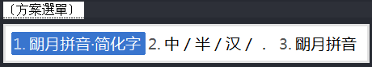

general
Rime 中的數據文件分佈及作用
-
共享資料夾
- 【中州韻】 /usr/share/rime-data/
- 【小狼毫】 "安裝目錄\data"
- 【鼠鬚管】 "/Library/Input Methods/Squirrel.app/Contents/SharedSupport/"
共享資料夾包含預設輸入方案的源文件。 這些文件屬於 Rime 所發行軟件的一部份，在訪問權限控制較嚴格的系統上對用戶是只讀的，因此謝絕軟件版本更新以外 的任何修改—— 一旦用戶修改這裏的文件，很可能影響後續的軟件升級或在升級時丟失數據。
-
用戶資料夾
- 【中州韻】 ~/.config/ibus/rime/ （0.9.1 以下版本爲 ~/.ibus/rime/）
- 【小狼毫】 "%APPDATA%\Rime"
- 【鼠鬚管】 ~/Library/Rime/
在「部署 Rime」操作時，將用到這裏的輸入方案源文件、並結合用戶定製的內容來編譯預設輸入方案。
用戶資料夾則包含爲用戶準備的內容，如：
- default.yaml:〔全局設定〕
- weasel.yaml:〔發行版設定〕
- <方案標識>.schema.yaml:〔預設輸入方案副本〕
- installation.yaml: ※〔安裝信息〕
- user.yaml: ※〔用戶狀態信息〕
編譯輸入方案所產出的二進制文件：
- <方案標識>.prism.bin:〔Rime 棱鏡〕
- <詞典名>.table.bin:〔Rime 固態詞典〕
- <詞典名>.reverse.bin:〔Rime 反查詞典〕
記錄用戶寫作習慣的文件：
- ※〔用戶詞典〕 <詞典名>.userdb.kct
- ※〔用戶詞典快照〕 <詞典名>.userdb.txt、<詞典名>.userdb.kct.snapshot 見於同步文件夾
以及用戶自己設定的：
- default.custom.yaml: ※〔用戶對全局設定的定製信息〕
- <方案標識>.custom.yaml: ※〔用戶對預設輸入方案的定製信息〕
- ※〔用戶自製輸入方案〕及配套的詞典源文件
註：以上標有 ※ 號的文件，包含用戶資料，您在清理文件時要注意備份！
ps: 以上内容完全来自于官网的文档.
备注
-
鼠标跟随: 最新版本(weasel-0.11.0.0-installer)已经支持sublime text 3中的鼠标跟随了.
-
三种配置类型:
default.yaml(全局配置)、xxxx.schema.yaml(某某方案配置)、weasel.yaml(全局外观配置).- 首先是把custom文件内容清空, 然后添加代码.
- 全局配置包括
schema_list(可选方案),switcher(方案切换),menu(后选词个数等)等等.全局方案配置中的每个可选方案 都会有一个方案.schema.yaml配置文件, 该配置文件配置了该方案的engine(引擎),switches(中英文状态、繁体简体、全角半角等). weasel.yaml中配置了输入法的外观, 如(style,preset_color_schemes), 输入法点字体、字号、横竖排版都在这里配置.- 用户修改配置时, 最好是在对应点用户配置文件中修改, 即
default.custom.yaml(全局配置)、xxxx.custom.yaml(方案配置)、weasel.custom.yaml(外观配置). 用户只需要将相应的配置语句写在对应配置文件的pacth下即可.
-
模糊音设置
比如在luna_pinyin_simp.custom.yaml文件中直接写上patch:.... -
在已经调出输入法时, 按F4/
ctrl+grave(grave是tab上面的键), 切换输入方案(schema):
 -
将程序文件夹 (
C:\Program Files (x86)\Rime\weasel-0.11.1\data) 中的输入方案 (如luna_pinyin_simp.schema.yaml: 朙月拼音·简化字) 拷贝到用户文 件夹 (C:\Users\users\AppData\Roaming\Rime) 中, 把文件名修改为luna_pinyin_simp.custom.yaml, 然后把内容清空, 再添加代码, 最后重新部署即可生效. -
shift: 中文状态下按shift, 将字母上屏.
-
中文状态下的半角符号
注意 (1)在 default.custom.yaml 中修改. (2) 缩进看其中的caiheyao的评论. (3)alternative.yaml与symblos.yaml有重叠, 前者是后者的子集. -
添加symbols: 就是希腊字符等. 在
luna_pinyin_simp.custom.yaml中添加如下代码:
patch: "punctuator/import_preset" : symbols "recognizer/patterns/punct": "^/([A-Z|a-z]*|[0-9]|10)$"